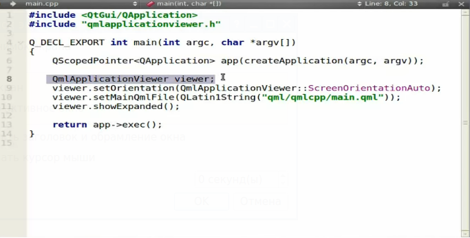

Способ 1
В процессе разработки приложения под андроид на Qt столкнулся с проблемой фиксации ориентации экрана приложения. Оказалось, что программным кодом это сделать невозможно, так как qml свойство "Screen.orientation" доступно только для чтения. Но, есть обходной путь - редактирование манифеста.
В файле манифеста AndroidManifest.xml нужно найти строку:
android:screenOrientation="unspecified"
в которой можно поменять значение на нужное.
Портретная ориентация задается так:
android:screenOrientation="portrait"
или так:
android:screenOrientation="sensorPortrait"
В чем разница, понять не смог. Похоже что значение sensorPortrait появилось в Android 5.0.
Альбомная ориентация задается аналогично:
android:screenOrientation="landscape"
или
android:screenOrientation="sensorLandscape"
Внимание! Правка файла AndroidManifest.xml, который находится в каталоге сборки Debug или Release ни к чему не приведет, потому что при каждой пересборке он будет пересоздаваться заново, и все изменения, внесенные в него, улетучатся. Нужно править файл AndroidManifest.xml в шаблоне настроек Android-приложения. О том, как это делать, напсано в статье "Как в Qt создать шаблон настройки Android-приложения".
Способ 2
А вот еще один способ, который нужно проверить. Способ подсмотрен на одном видео, и возможно что работает только для QmlApplicationViewer, который был в ранних версиях Qt с технологией QML, и по своей сути является наследником QDeclarativeView.
